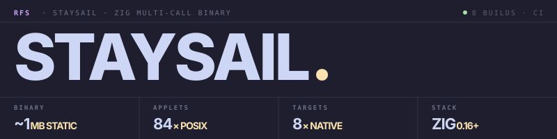

A BusyBox-style multi-call binary in Zig — 84 Unix utilities, one ~1 MB statically-linked executable. Cross-compile every target from one host.
$ staysail seq 100 | staysail sort -rn | staysail head -3 100 99 98 $ staysail find . -name '*.zig' -size +1k -mtime -7 ./src/main.zig ./src/applets/awk.zig ./src/applets/jq.zig $ staysail tar -czf src.tgz src/ --exclude='*_test.zig' $ staysail sha256sum src.tgz 4f2a8b1c3e7d… *src.tgz
BusyBox-style single-binary shell toolkits across five languages. Each one occupies a different point on the size, portability, and runtime curve. staysail is the smallest realistic native build — no interpreter, no runtime.
| Tool | What it does | Language |
|---|---|---|
| rill | Pure x86_64 NASM — 41 utilities, ~34 KB static ELF, direct syscalls, no libc, no runtime. | ASM |
| moonraker | Lua via luastatic — 81 utilities, ~1.2 MB static binary with embedded Lua VM. |
Lua |
| staysail | Zig via zig build — 84 utilities, ~1 MB statically-linked, smallest realistic native build. This one. |
Zig |
| jib | Rust via Cargo — 73 utilities + jq/http/dig, ~2.4 MB avg across 11 platform builds. | Rust |
| topsail | Single-file Go binary — 84 utilities, ~3.4 MB per platform, plus .deb / .rpm / .apk packages. | Go |
| mainsail | Python via Nuitka — 84 utilities, ~5.5 MB native (or ~110 KB .pyz with system Python). |
Python |
A familiar POSIX surface. Real flag coverage, not stubs. One static binary that runs unchanged on glibc, musl/Alpine, distroless, and scratch.
Every common shell tool dispatched through a single executable — POSIX coreutils plus jq, http (TLS), dig, nc, archives, hashing, and the BusyBox parity gap-fillers. Symlink to any applet name and dispatch becomes transparent.
zig build -Dtarget=x86_64-linux-musl from Windows just works. Eight release targets — Linux glibc/musl × x64/arm64, Windows × x64/arm64, macOS × x64/arm64 — built from a single CI job.
-Dapplets=cat,grep,sed compiles only those three. The comptime registry never references the others, so the linker drops them entirely. A 4-applet build is well under 100 KB.
No interpreter cold-start. Pipelines that spawn 1000 instances feel native. tail -f, xargs -0, binary-safe streams through every text utility.
find with full predicate tree (-and/-or/!/-exec). grep and sed with full POSIX ERE via the in-tree regex engine. awk with BEGIN/END, regex patterns, variable assignment. jq with constructors, if/then/else, 16+ builtins.
One file per applet — most are under 200 lines. Add a new one by dropping src/applets/<name>.zig with the four-symbol contract: name, aliases, help, run(ctx, args).
install-aliases symlinks every applet to a target dir. completions bash|zsh|fish|powershell emits shell completions. update self-replaces from the latest GitHub release atomically.
Linux × x86_64 / ARM64 (glibc + musl), macOS × Intel / Apple Silicon, Windows × x86_64 / ARM64. Cross-compiled from one host, no per-OS runners required.
Each applet implements common POSIX flags. Run staysail <applet> --help for per-applet usage.
Clean separation between entry point, dispatch logic, comptime registry, and per-applet implementations. Adding an applet is a one-file change plus two registry entries.
src/main.zig receives Zig 0.16's std.process.Init, sets up streaming stdio and an arena allocator, hands off to dispatch. Same path whether invoked directly, via staysail <applet>, or through a symlink.
Strip .exe from argv[0] basename, look it up in the registry. Unknown invocations fall through to subcommand mode (staysail <applet> [args]). --help intercepted long-form only — -h stays free for applet flags like df -h.
src/registry.zig walks applets/all.zig at compile time, filters by the active_applets build option, produces a flat []const Applet. Excluded applets are not referenced, so the linker drops them entirely.
One file per applet under src/applets/, each exporting name, aliases, help, and run(ctx, args) !u8. Stdio reads/writes go through a Context struct so tests construct one with .fixed(...) writers.
Pre-built binaries on the releases page, or build from source for the full hackable experience. Cross-compile every target from one host.
# Linux / macOS — pre-built binary $ curl -LO https://github.com/Real-Fruit-Snacks/\\ staysail/releases/latest/download/staysail-linux-x64 $ chmod +x staysail-linux-x64 && ./staysail-linux-x64 --version staysail 1.0.0 # Windows (PowerShell) PS> Invoke-WebRequest -OutFile staysail.exe ` https://github.com/Real-Fruit-Snacks/Staysail/releases/` latest/download/staysail-windows-x64.exe # Or build from source — Zig 0.16+ $ git clone https://github.com/Real-Fruit-Snacks/Staysail $ cd staysail && zig build -Doptimize=ReleaseSmall → ./zig-out/bin/staysail (~1 MB, fully static on musl) # Cross-compile every target from one host $ zig build -Dtarget=x86_64-linux-musl -Doptimize=ReleaseSmall $ zig build -Dtarget=aarch64-macos -Doptimize=ReleaseSmall
# Daily pipelines — find + awk + jq, all in one binary $ staysail find . -name '*.zig' -mtime -7 $ staysail awk '{ s+=$1 } END{ print s/NR }' data.csv # Real jq with constructors + if/then/else $ staysail jq -r '.users | map(select(.region == "us")) | sort_by(.name) | .[].name' inv.json # HTTPS via Zig's TLS stack $ staysail http -i https://api.github.com/zen # Symlink every applet to ~/.local/bin $ staysail install-aliases ~/.local/bin created 84 aliases in ~/.local/bin # Self-update from latest release $ staysail update updated to 1.0.0